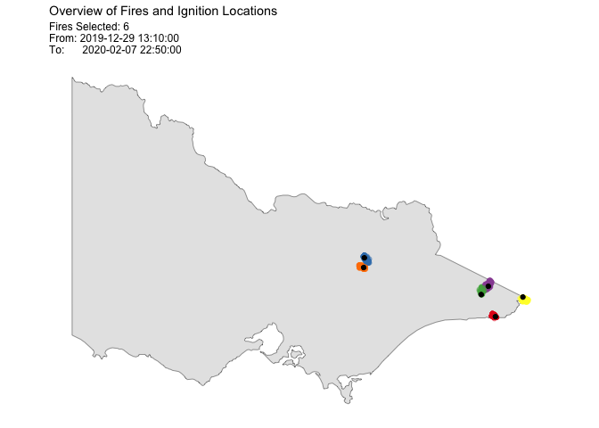
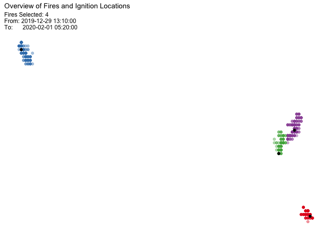
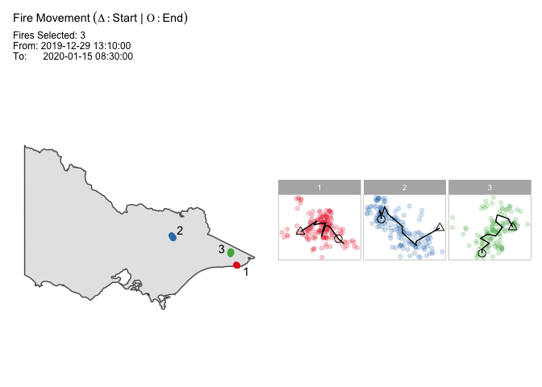
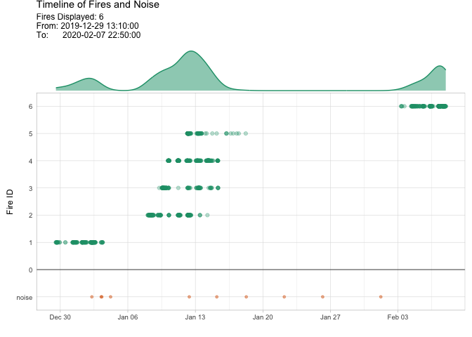

Overview
“spotoroo” stands for spatiotemporal clustering in R of hot spot data. It is an algorithm to cluster satellite hot spots, detect ignition points and reconstruct fire movement.
Installation
You can install the released version of spotoroo from CRAN with:
install.packages("spotoroo")You can install the development version from GitHub with:
# install.packages("devtools")
devtools::install_github("TengMCing/spotoroo")Usage
The below examples use the built-in dataset hotspots. The hot spot data needs to has at least three columns: the longitude, the latitude, and the observed time.
str(hotspots)
#> 'data.frame': 1070 obs. of 3 variables:
#> $ lon : num 147 146 143 149 142 ...
#> $ lat : num -37.5 -37.9 -37.8 -37.4 -37.1 ...
#> $ obsTime: POSIXct, format: "2020-02-01 05:20:00" "2020-01-02 06:30:00" ...Perform spatiotemporal clustering on this dataset. You need to specify which columns correspond to the spatial variables (“lon”, “lat”), and which to observed time (“obsTime”).
There is a choice of options for the algorithm.
“activeTime” sets the time to consider that a fire can be active, and longer than this between hot spots will create a new cluster
“adjDist” sets the maximum intra-cluster spatial distance between nearest hot spots beyond which they would be considered part of a different cluster
“minPts” sets the minimum number of hot spots in a cluster
“minTime” sets the minimum length of time of a cluster
“ignitionCenter” sets the method to calculate the ignition points
“timeUnit” and “timeStep” set the length of time between successive time indexes
result <- hotspot_cluster(hotspots,
lon = "lon",
lat = "lat",
obsTime = "obsTime",
activeTime = 24,
adjDist = 3000,
minPts = 4,
minTime = 3,
ignitionCenter = "mean",
timeUnit = "h",
timeStep = 1)
#>
#> ──────────────────────────────── SPOTOROO 0.1.4 ────────────────────────────────
#>
#> ── Calling Core Function : `hotspot_cluster()` ──
#>
#> ── "1" time index = 1 hour
#> ✔ Transform observed time → time indexes
#> ℹ 970 time indexes found
#>
#> ── activeTime = 24 time indexes | adjDist = 3000 meters
#> ✔ Cluster
#> ℹ 16 clusters found (including noise)
#>
#> ── minPts = 4 hot spots | minTime = 3 time indexes
#> ✔ Handle noise
#> ℹ 6 clusters left
#> ℹ noise proportion : 0.935 %
#>
#> ── ignitionCenter = "mean"
#> ✔ Compute ignition points for clusters
#> ℹ average hot spots : 176.7
#> ℹ average duration : 131.9 hours
#>
#> ── Time taken = 0 mins 1 sec for 1070 hot spots
#> ℹ 0.001 secs per hot spot
#>
#> ────────────────────────────────────────────────────────────────────────────────
result
#> ℹ spotoroo object: 6 clusters | 1070 hot spots (including noise points)You can make a summary of the clustering results.
summary(result)
#>
#> ──────────────────────────────── SPOTOROO 0.1.4 ────────────────────────────────
#>
#> ── Calling Core Function : `summary_spotoroo()` ──
#>
#> CLUSTERS: ALL
#> OBSERVATIONS: 1070
#> FROM: 2019-12-29 13:10:00
#> TO: 2020-02-07 22:50:00
#>
#> ── Clusters
#> ℹ Number of clusters: 6
#>
#> Observations in cluster
#> Min. 1st Qu. Mean 3rd Qu. Max.
#> 111.0 131.0 176.7 233.2 256.0
#> Duration of cluster (hours)
#> Min. 1st Qu. Mean 3rd Qu. Max.
#> 111.2 118.2 131.9 146.1 148.3
#>
#> ── Hot spots (excluding noise)
#> ℹ Number of hot spots: 1060
#>
#> Distance to ignition points (m)
#> Min. 1st Qu. Mean 3rd Qu. Max.
#> 0.0 2840.3 5058.2 6981.6 13452.7
#> Time from ignition (hours)
#> Min. 1st Qu. Mean 3rd Qu. Max.
#> 0.0 25.2 62.5 98.2 148.3
#>
#> ── Noise
#> ℹ Number of noise points: 10 (0.93 %)
#>
#> ────────────────────────────────────────────────────────────────────────────────You can extract a subset of clusters from the results.
fire_1_and_2 <- extract_fire(result, 1:2)
head(fire_1_and_2, 2)
#> lon lat obsTime timeID membership noise distToIgnition
#> 1 149.3 -37.75999 2019-12-29 13:10:00 1 1 FALSE 1111.885
#> 2 149.3 -37.78000 2019-12-29 13:10:00 1 1 FALSE 1111.885
#> distToIgnitionUnit timeFromIgnition timeFromIgnitionUnit type obsInCluster
#> 1 m 0 hours h hotspot 146
#> 2 m 0 hours h hotspot 146
#> clusterTimeLen clusterTimeLenUnit
#> 1 116.1667 hours h
#> 2 116.1667 hours hPlot of the result. In this example, there is a total of 6 clusters, so all can be displayed.
plot(result, bg = plot_vic_map())
You can also choose a subset of clusters, and this will plot without a map, so that you can see a zoomed in view of the hot spot clusters and their ignition points.

To examine the fire movements, use the option “mov”, and the movement will be shown as connected lines between centroids at each time step, for each cluster.
plot(result,
type = "mov",
cluster = 1:3,
step = 6,
bg = plot_vic_map())
To examine the time line of clusters and learn about the intensity of fire periods, use the option “timeline”.
plot(result, "timeline",
dateLabel = "%b %d",
mainBreak = "1 week")